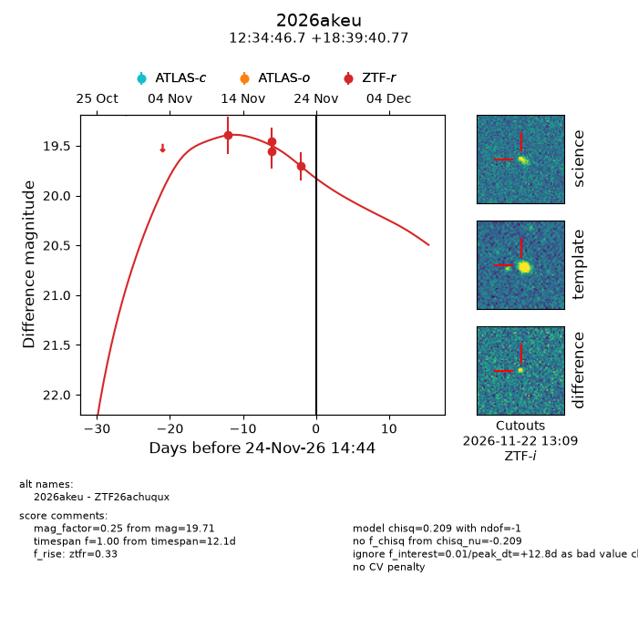
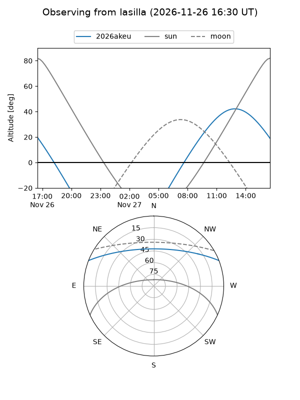
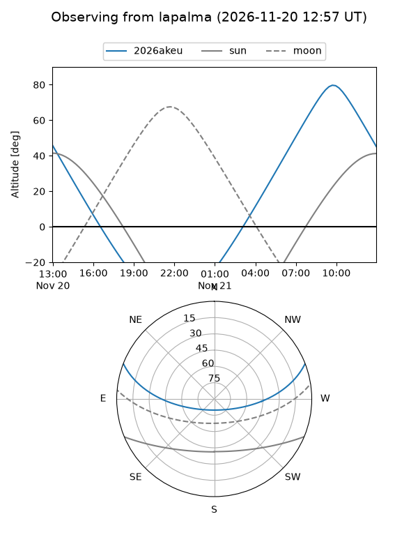
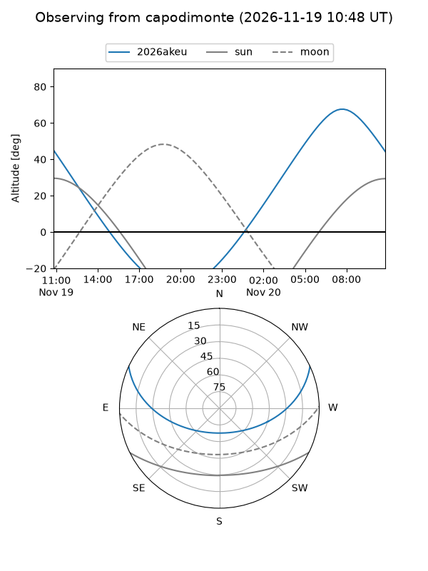
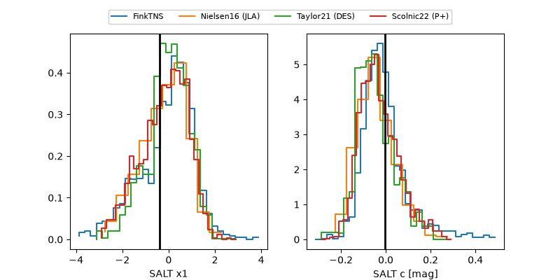

2026akeu
Target 2026akeu at 2026-11-24 14:47
Aliases and brokers:
FINK-ZTF: ztf.fink-portal.org/ZTF26achuqux
Lasair-ZTF: lasair-ztf.lsst.ac.uk/objects/ZTF26achuqux
ALeRCE-ZTF: alerce.online/object/ZTF26achuqux
YSE-PZ: ziggy.ucolick.org/yse/transient_detail/2026akeu
TNS name: wis-tns.org/object/2026akeu
Direct TNS query: direct search
alt names
ZTF26achuqux (ztf,fink_ztf)
2026akeu (tns,yse)
Coordinates:
equatorial (ra, dec) = 188.6944,+18.66132
equatorial (HMS+DMS) = 12:34:46.67,+18:39:40.77
galactic (l, b) = (277.7117,+80.70653)
Flags:
peak dt: +12.8
Photometry:
last ztfr=19.71
4 ztfr detections
Lightcurve

Visibility



Additional plots
